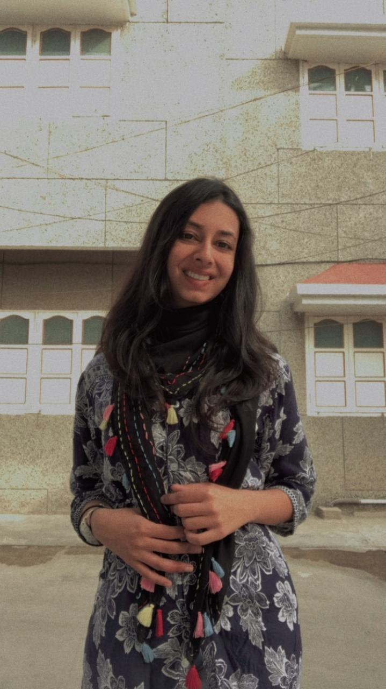
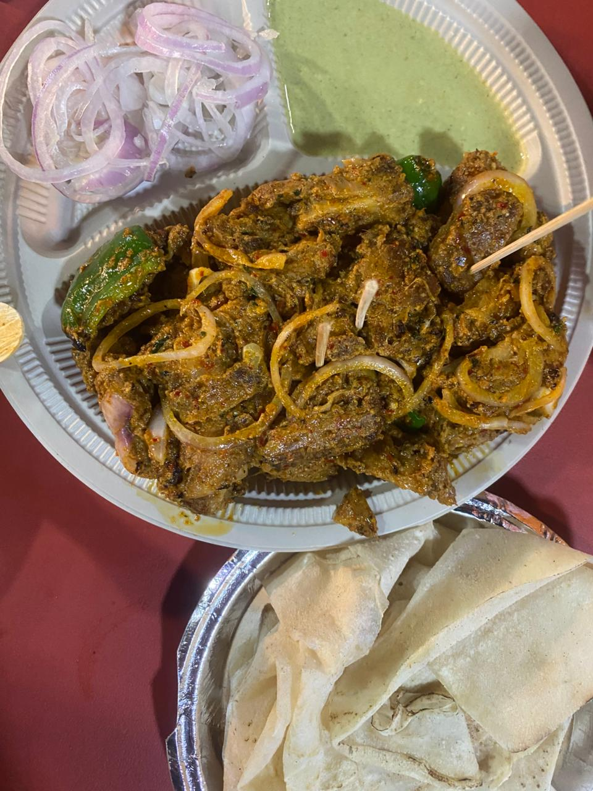
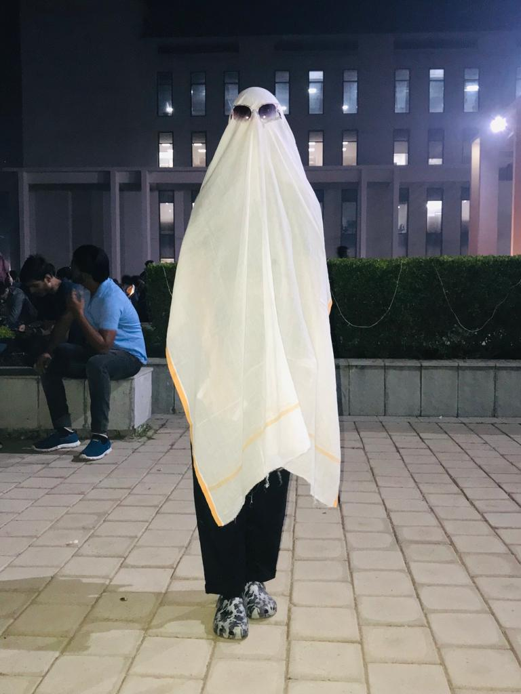
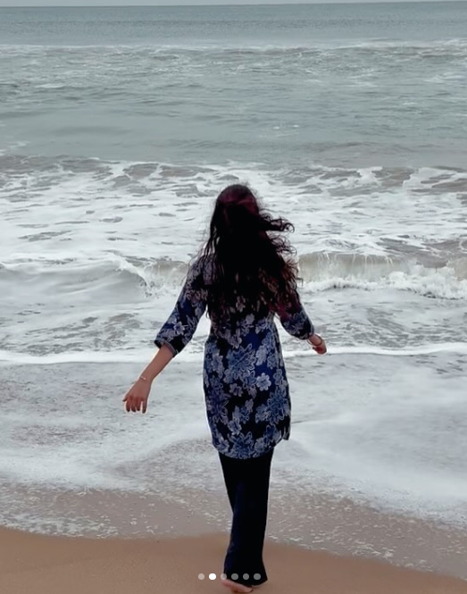

Timeline ⏳
High School Days
.jpg)
Your birthday in your high school!
Karthik from the future 🔮:
look at your beautiful eyes, its so innocent and not ready for this world.. this kanika has no idea what's coming in her life!!! Ditching commerce !! going to computer science !!! omg did you just switch to sustanable engineering!! dayumnnn !!! but one thing is for sure your 8th grade kanika would be happy that you are going to germany!
look at your beautiful eyes, its so innocent and not ready for this world.. this kanika has no idea what's coming in her life!!! Ditching commerce !! going to computer science !!! omg did you just switch to sustanable engineering!! dayumnnn !!! but one thing is for sure your 8th grade kanika would be happy that you are going to germany!
Style Check
.jpg)
Your Random Post to Check Various Styles - well thats what you told me darling.
Karthik from the future 🔮:
It seems like you were tying to grab someones attention back here! I am not sure if you got the change to get his attention, but you certainly got mine!
It seems like you were tying to grab someones attention back here! I am not sure if you got the change to get his attention, but you certainly got mine!
First Pics
The random post you send me once!

Karthik from the future 🔮:
This was one of the first pictures you send to me, and ngl you look so cute in this picture that I wanted to marry you instantantly!! vau vauu
This was one of the first pictures you send to me, and ngl you look so cute in this picture that I wanted to marry you instantantly!! vau vauu
Foodie Moments
Soyy Chapp at your favourate dhaba!

Karthik from the future 🔮:
Although, you have told me that your favourate food is daal makhani, you actually told me that you wanted to eat soy chapp with me first, other than the noodles from the shop in noida!
Although, you have told me that your favourate food is daal makhani, you actually told me that you wanted to eat soy chapp with me first, other than the noodles from the shop in noida!
Goofy Moments
Your goofy momments:

Karthik from the future 🔮:
You are starting a new life in Germany, but please dont forget your best time at Benette Universitity, where you did weird pranks on others and did a lot of backchodi! I never got to do in in my college life... but this goofy side of yours is one of the reasons why I am crazy about you in the first place! please dont loose it!
You are starting a new life in Germany, but please dont forget your best time at Benette Universitity, where you did weird pranks on others and did a lot of backchodi! I never got to do in in my college life... but this goofy side of yours is one of the reasons why I am crazy about you in the first place! please dont loose it!
Music & Vibes

Our first time vibing to music!
Karthik from the future 🔮:
this is where I felt so connected to you! like I assumed that you liked it for namesake, but when you posted your picture with haunted, and the scary ghost story realted to my experice with my grandmother's ghost made me skip a beat ! you are the best kanika!! also you look so cute in this picture!
this is where I felt so connected to you! like I assumed that you liked it for namesake, but when you posted your picture with haunted, and the scary ghost story realted to my experice with my grandmother's ghost made me skip a beat ! you are the best kanika!! also you look so cute in this picture!
SRM Days
Your time in SRM:

Karthik from the future 🔮:
I remeber the day you posted this picture, you video called me and it looked like you matured so much! even tho you did'nt want to go to SRM, you went, you made friends, and even went on a trip with them! I was so happy that you were mingling with people! you even attended a class! we also got closer! there were ups and downs, but it sure was an important chapter in your life!
I remeber the day you posted this picture, you video called me and it looked like you matured so much! even tho you did'nt want to go to SRM, you went, you made friends, and even went on a trip with them! I was so happy that you were mingling with people! you even attended a class! we also got closer! there were ups and downs, but it sure was an important chapter in your life!